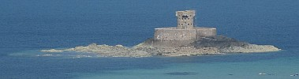

Moussieu l'Editeu,
La Merrienne est bein intérêssie dans chein tchi s'pâsse dans l's'Etats au sujet d'la Baie d'Saint-Ou. Chaque jour ch'est la même histouaithe, et quand je n's'y pas là ou va siez tchique vaisin pour savé tchèqu'il en pense.
Quand à mé, j'm'en fiche bein, car chais jours j'n'y vais pas souvent à la Baie, et chais mêssieux d'la Ville tch'y sont si intérêssis m'font rithe. sûs chu point-là je s'y d'l'avis d'la Merrienne tch'y f'thaient bein mûs d'taithe lûs béque et d'lûs mêlé d'lûs affaithes.
Comme ou s'fait: "A qu'menchi ch'est à nous Saint-Ouennais qu'oulle appartcheint, la Baie. Il est vrai qu'y'en a un mio dans Saint-Piêrre et un morcé dans Saint-Brelade, mais ou n'est pas app'lée la Baie d'Saint-Ou pour rain, et ch'est à nous de décidé si y'étha des maisons d'bâties là ou non."
"Bon," j'l'y dit, "mais en approuve-tu d'avé des bâtisses tout l'long d'la Baie?"
"Mais cèrtainement, nânin, j'n'en approuve pas. Y'en a dêjà bein trop, et la piupart n'sont pas d's'ornements. Si j'pouvais, j'abbat'rais tout."
"A chu compte-la," j'ly dis, "tu vot'tais pas pour l'idée de bâti une ville à l'Eta?"
"Crais-tu que j's'y folle?" ou dit. "Une ville à l'Eta. Honnêtement, Ph'lip, j'qu'menche à craithe que y'a des Comités tch'y dév'thaient être à l'Asile. Un biau site pour une ville, ma fé! Tchèsque-y s'sa la préchaine chose?"
"N'te fait pas d'bile," j'l'y dit. "Le projet est abandonné et ach'teu la seule tchéstchon est si chais villais pouôrront v'nin bâti des bungalows le long d'la mé, ouèsque y veindraient pâssé lûs Dîmanche en été."
"Eh bein, tch'y bâtissent," ou s'fit, "et j'espèthe que tchique jour y veindra une mathée tch'enfonç'ça tout. J'ai ouï dithe que y'a des chents ans y vint une tempête tchi poussit la mé jusqu'ès Bianches Banques et l'Mont Rossigno. Nou pouôrrait ocquo vais chonna, sinon y faut éspethé que ch'ne s'sa pas dans la saison des patates. Mais dis-mé, Ph'lip, y'a-t'y pûs d'un comité mêlé dans ch't'affaithe ichin?"
"Y'en a trais, et yun d'y'eux est l'comité des Biautés Natuthélles."
"Oh, tch't'y-là," ou dit. "J'pensais tch'il avait tait fichi à la porte."
"Véthe, une fais," j'l'y dit, "mais y résuscitit, sinon y n'peut faithe rain d'san tout-seu. Et comme les trais Comités n'accordent que rarement, y n'font pas toutes les bêtises tch'y pouôrraient faithe."
La Merrienne considéthit, épis, ou r'quémenchit. "Si par malheur," ou dit, "y'avait bétôt une tappée d'maisons le long d'la route, tchèsqu'y d'veindrait des sales iaux et tout l'restant? N'y'a pas d'êgouts par là?"
"Nou f'thait des creux," j'l'y dit, "en éspethance que tout s'en ithait dans l'sablye."
"Épis l'odeu dans les grandes chaleurs?"
"Y'a tréjous une bouonne brîse dans la Baie," j'l'y dit, "et l'vent ne s'sait pas tréjous du mauvais bord. Sans doute les vendeurs d'Iau d'Cologne en Ville f'thaient des sous. Et, après tout les gens n'crèvent pas quand les fermiers mettent de l'êpu sûs l'herbe."
"P't'être bein," ou dit, "mais i' prennent garde de freunmé lûs f'nêtres, et ch'n'est qu'par bordée. Ch'n'est pas comme un sale creux tchest tréjous là aupi d'la porte. Mais y'a une autre chose. Ouèsqu'ils éthont d'iaux, pour béthe et pour le lavage? Mett'ront-y des tuyaux dans la Mathe au Seigneur ou tchi?"
"Y sont à-bein-près sûs l'même pid comme les gens dans chais belles maisons que l's'Etats avaient bâti pas lien d'ichin," j'l'y dit. "Ils éthont des citèrnes."
"Et dans l'temps sec?"
Je m'grattit la tête. "Y faudra s'fié sûs la Providence," j'l'y dit, "et tâchi d'arrangi pour une bouonne achie deux ou trais fais la s'maine. Mais n'oublie pas, Merrienne, que y'a tréjous d'la bièthe si y'iau manque. Il est vrai que ch'ne s'sait pas tout-à-fait conv'nablye, mais au mains, si nou n'pouvait pas s'lavé nou n'éthait pas sé."
"Tu pâsle comme un imbécile," ou dit. "Tchèsque une femme f'thait là s'ou voulait une tâsse de tais?"
"Ou s'en pâss'sait," j'l'y dit, "et probablyement chonna n'l'y f'thait pas d'ma."
Là-d'sûs, Moussieu, la Merrienne se mârrit, et j'm'en fut donné une poignie d'fain au bidet.
Ph'lip
27/3/1954
Viyiz étout: